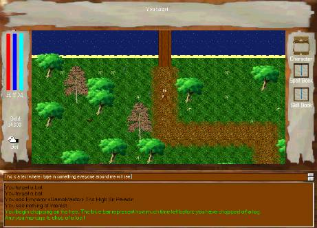
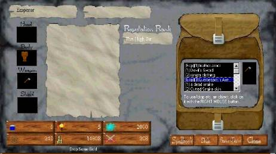

Era Online is a relatively easy game to navigate around in. All the information you need to access is in the game menus and windows. When you are in the game the main view would be like this:

From here is where everything happens. You can type in text which you want
other players to see, you can see what other people say, you can type in
commands and so on. On the left you can see three bars. The red represents
how much health you have, the dark blue represent the stamina, and the light
blue represent your mana. You can also see how much gold you have right
bellow the three bars.
Whenever you want to pick something up, move over the item and click
the hand icon on the left side of your view, and if you got enough space in your
backpack and the item is pickable, the item will appear in your backpack. Now,
on the right side of the screen is the icons where you can access other windows:
This is pretty self explanatory. The Character icon lets you access your character sheet where you can view your inventory, the Spell Book icon open your spell book and last, the Skill Book icon opens your skill book. The Skill Book window are explained in the Skills section and the Spell Book window is explained in the Spells & Spellcasting section. Lets take a look on the character sheet !

This is the character sheet. On the right side you can see the the backpack. If you want to drop, use or in any other way manipulate any item in the backpack, right click it in the list and a menu will pop up. Here is a explanation of the menu you get up: Use: You will try to use/equip the item. Drop: You will drop the item to the ground if there is space on the ground. Unequip: If the item you selected was a weapon or shield, this will unequip it. Evaluate: The game will describe the item and its value to you. Discard: The item will be destroyed. Do you see the boxes in the left bottom ? The one with the water flask says how much drink your charatcer has left to use (see Flora & Food section), the food icon says how much food you have left to use (see Flora & Food section), the glowing blue ball represent how much mana you have totally, the two swords represent how much strenght you have total, the gold pile represent how much gold you have and last, the shield represent how much stamina you have total. To drop gold onto the ground, click the DROP GOLD label bellow the gold pile icon. There are also four images on the left of the screen showing what items you have equipped. This is very self explanatory. The white box in the middle is currently not in use, but may be used in future versions of Era Online.
This is the game menu. To access it simply press ESC. There is numerous
options here. Server Status is currently not in use and neither is Era Web Site.
If you want to contact a GM if you have problems, simply click Contact A Gm.
If you want to turn music off, simply click Turn Music Off and the button will
switch to Turn Music On. If you want to turn music on again, simply click it.
However, the music will not start until you have moved to another map.
And then last, you can quit Era Online by clicking Quit Era Online.
The rest is pretty easy to understand yourself. Now you know how to view the
different menus and windows Era Online has ! Lets jump to next section !